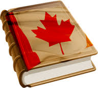
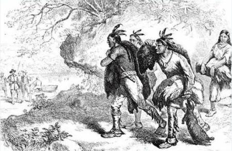

Povijest Kanade
Starosjedioci su Indijanci, a na sjeveru zemlje Eskimi. Već oko 1000. godine Vikinzi su dosegli do istočnih obala Kanade. Od 1534.-36. zaposjeo je francuski pomorac JacquesCartier područje oko St. Lawrencea (tvz. Nova Francuska). Samuel de Champlain prodire 1603.-35. u unutrašnjost i kolonizira zemlju (Newfoundland, Nova Scotia, Québec). Prvo trajno europsko naselje osnovano je od strane Francuza- Port Royal 1605. godine. Glavnu gospodarsku granu u to vrijeme čini trgovina krznom, a ugrožavaju ju nizozemski kolonisti iz New Amsterdama (poslije New York) 1612.-64. kao i Englezi koji su zaposjeli područje oko Hudsonova zaljeva na sjeveru (1668.-69.).
Zbog borbe za teritorijem i trgovine krznom u razdoblju od 1689. i 1763. izbija nekoliko ratova između Francuza, Britanaca i Indijanaca. Utrechtskim mirom 1713. Francuska je izgubila Newfoundland, Novu Scotiju, te prava na Hudsonov zaljev. Pariškim mirom 1763., nakon Sedmogodišnjeg rata (Francusko- Indijanski rat) Francuska gubi i ostatak Kanade. Nakon Američkog rata za neovisnost oko 50 000 britanskih rojalista nalazi utočište u Kanadi. Od 1791. Kanada je podijeljena na Donju Kanadu (Québec) i- uglavnom francusko područje, te Gornju Kanadu (Ontario)- naseljenu britanskim rojalistima izbjeglim iz SAD-a (1783.-84.).
Godine 1812. Kanada je poprište rata između SAD-a i Britanskog Carstva, a njezina uspješna obrana imala je dugotrajne posljedice. Kanada je ostala dio britanske Krune te je izgrađeno jedinstvo među njezinim stanovnicima. Nizom sporazuma između SAD-a i Kanade zavladao je mir. Od tada započinje velika imigracija Britanaca i Iraca prema Kanadi. Pobunom iz 1837. tražena je vlada ali pobuna propada. 1840. Kanađani su ujedinjeni u federalnu koloniju Ujedinjenu Provinciju Kanadu. Nakon što je sa SAD-om dogovoreno da 49. sjeverna paralela čini granicu Britanci osnivaju na zapadu dvije kolonije: Koloniju Otok Vancouver i Koloniju Britanska Kolumbija koje su bile odvojene od Ujedinjene Provincije Kanade.
Godine 1867. proglašena je federalna unija Kanade sa statusom dominiona s četiri provincije: Ontario, Québec, Nova Scotia i New Brunswick. Do 1878. u dominion Kanadu je uključen cijeli britanski teritorij Sjeverne Amerike (Osim Newfoundlanda). U drugoj polovici 19. stoljeća osnivaju se političke stranke: konzervativna (1854.) i liberalna (1873). Gospodarski prosperitet izazvao je u prvim desetljećima 20. st. veliko useljavanje, u prvom redu iz Velike Britanije i Irske, a velik broj useljenika je došao i iz ostatka Europe.
Kanada je sudjelovala u Prvom i Drugom svjetskom ratu na strani Velike Britanije, postavši nakon Prvog svjetskog rata neovisna (Potpisnica sporazuma u Versaillesu, članica Lige naroda), a Westminserskim statutom iz 1931. i formalno neovisna država, članica britanskog Commonwealtha. Konačne granice je dobila 1949. priključenjem Newfoundlanda. Među osnivačima je NATO-a 1949. Održana je politička stabilnost, a vodeće postaju Liberalna stranka i Progresivna konzervativna stranka. 1960-ih i 1970-ih u pokrajini Québec separatističke skupine povremeno izvode bombaške napade. Parlament kao zakonodavna vlast sastoji se od tri dijela: kraljice odnosno generalnog guvernera koji ju predstavlja, Senata i Parlamenta. Guverner, na prijedlog kanadskog premijera imenuje 105 zastupnika u Senat. 308 članova Parlamenta izabiru direktno građani na izborima. Svaki zastupnik se izabire u jednom izbornom okrugu.
Premijer Pierre E. Trudeau (na vlasti 1968.-79. i 1980-84.) nastojao je smanjiti utjecaj SAD-a na kanadsko gospodarstvo. U doba premijera Martina B. Mulroneya (1984.-93.) sa SAD-om je 1989. postignut sporazum o slobodnoj trgovini, a 1992. zaključen je Sjevernoamerički sporazum o slobodnoj trgovini (NAFTA). Potkraj 1995. Québecu je priznata društvena zasebnost na osnovi francuskog jezika i kulture, a nizom zakona 2000. otežana mu je mogućnost odcjepljenja. 1993.-2003. premijer je bio JosephJacques Jean Chrétien, a od 2003. premijer je Paul Martin.